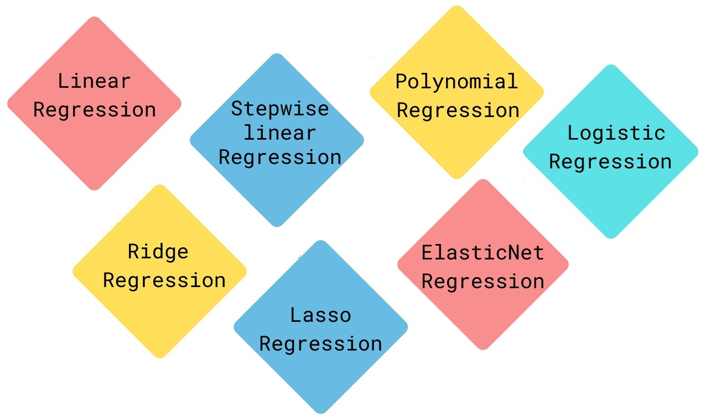

Machine learning projects focused on predicting continuous outcomes
with clear business framing, model evaluation, and interpretation.
Project Focus
Regression models are useful when the goal is to estimate a numeric value: prices, demand, duration, risk scores, traffic delays, or operational performance. My regression projects focus on building realistic predictive workflows, from data validation and exploratory analysis to feature engineering, model comparison, tuning, and interpretation.
The projects in this section emphasize practical decisions: choosing metrics that make sense for stakeholders, detecting data quality issues, avoiding misleading conclusions, and explaining model results in a way that connects technical work with business value.
Traffic Waiting Time Prediction in Quito
Regression project predicting taxi traffic waiting time in Quito using trip duration, distance, pickup and dropoff coordinates, temporal patterns, and engineered route features. The workflow includes data cleaning with geographic rules, outlier inspection, exploratory analysis, feature engineering, model comparison, hyperparameter tuning, external holdout evaluation, permutation importance, and reusable model artifacts.
Tools: Python, pandas, scikit-learn, Folium, regression modeling, feature engineering, geospatial analysis, model evaluation, and GitHub documentation.

Car Price Prediction
Regression modeling project focused on estimating car prices from vehicle characteristics. This project is part of my earlier preparation work and is scheduled for a future portfolio refinement pass to improve structure, documentation, and presentation.
Next Regression Work
Additional regression projects, including car price and traffic volume modeling work, will be reviewed and upgraded with the same standard: clear problem definition, reproducible notebooks, professional visualizations, model evaluation, and concise business conclusions.